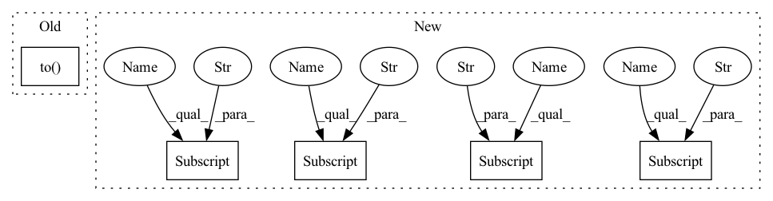

Pattern ID :1027

Before Change
self.device = torch.device("cuda")
else:
self.device = torch.device("cpu")
self.rim_model = RIM(self.device, args).to(self.device)
self.Linear = nn.Linear(args["hidden_size"] * args["num_units"], 10)
self.Loss = nn.CrossEntropyLoss()
After Change
self.device = torch.device("cuda")
else:
self.device = torch.device("cpu")
self.rim_model = RIM(self.device, args["input_size"], args["hidden_size"], args["num_units"], args["rnn_cell"], args["key_size_input"], args["value_size_input"] , args["query_size_input"],
args["num_input_heads"], args["input_dropout"], args["key_size_comm"], args["value_size_comm"], args["query_size_comm"], args["num_input_heads"], args["comm_dropout"], args["k"]).to(self.device)
self.Linear = nn.Linear(args["hidden_size"] * args["num_units"], 10)
self.Loss = nn.CrossEntropyLoss()
In pattern: SUPERPATTERN
Frequency: 3
Non-data size: 5
Instances
Fragment ID: 2079263
Project Name: dido1998/recurrent-independent-mechanisms
Commit Name: 90ddb2729a7d5c24804dfec0bfe96ac9ca7b7d2f
Time: 2020-02-12
Author: adidolkar123@gmail.com
File Name: networks.py
Class Name: MnistModel
Method Name: __init__
Parent Class: nn.Module
Fragment ID: 2079039
Project Name: dido1998/recurrent-independent-mechanisms
Commit Name: bc15ade18e0de7129a778dffdf74bd218dda3607
Time: 2020-02-07
Author: adidolkar123@gmail.com
File Name: networks.py
Class Name: RIM
Method Name: __init__
Parent Class: nn.Module
Fragment ID: 2079262
Project Name: dido1998/recurrent-independent-mechanisms
Commit Name: 90ddb2729a7d5c24804dfec0bfe96ac9ca7b7d2f
Time: 2020-02-12
Author: adidolkar123@gmail.com
File Name: networks.py
Class Name: MnistModel
Method Name: __init__
Parent Class: nn.Module
Fragment ID: 2079037
Project Name: dido1998/recurrent-independent-mechanisms
Commit Name: 90ddb2729a7d5c24804dfec0bfe96ac9ca7b7d2f
Time: 2020-02-12
Author: adidolkar123@gmail.com
File Name: networks.py
Class Name: CopyingModel
Method Name: __init__
Parent Class: nn.Module